Aula 2 - Reflexão e Espelhos Planos e Esféricos
Óptica
Objetivos
Ao final desta aula, você deverá ser capaz de:
- Aplicar as duas leis da reflexão e distinguir reflexão regular de difusa.
- Construir imagens em espelhos planos e determinar distância, tamanho e deslocamento da imagem.
- Delimitar o campo visual e determinar quais objetos podem ser vistos no espelho.
- Prever o número de imagens em associações angulares de espelhos planos.
- Identificar os elementos de espelhos esféricos côncavos e convexos.
- Construir e classificar imagens usando raios notáveis.
- Resolver problemas com a equação de Gauss e o aumento linear transversal.
Situação-problema — escolhendo os espelhos de uma garagem
Uma garagem precisa melhorar a segurança em três locais. Na entrada, o motorista deve enxergar uma área ampla e perceber veículos que se aproximam pela lateral. Junto à bancada, uma pessoa precisa observar o próprio rosto sem deformação. Na área de manutenção, é necessário concentrar a luz de uma lâmpada sobre uma pequena região.
O responsável dispõe de um espelho plano, um convexo e um côncavo. Antes de instalá-los, surgem algumas perguntas:
- Qual espelho deve ser usado em cada local?
- Por que o espelho que mostra uma área maior faz os objetos parecerem menores?
- Em qual deles a imagem pode ser projetada sobre uma tela?
- Como prever a posição e o tamanho de cada imagem sem testar todas as possibilidades?
Ao longo da aula, as leis da reflexão, os raios notáveis e a equação de Gauss fornecerão os critérios para resolver esse problema.
Reflexão da luz
Na reflexão, a luz encontra uma superfície e retorna ao meio de origem. Em cada ponto da superfície, traçamos a normal, reta perpendicular à superfície. Os ângulos são medidos em relação à normal — não em relação ao espelho.
As leis da reflexão são:
- o raio incidente, a normal e o raio refletido pertencem ao mesmo plano;
- o ângulo de reflexão é igual ao ângulo de incidência:
\[ \boxed{\theta_r=\theta_i}. \]

Uma superfície polida produz reflexão regular: raios paralelos permanecem organizados e podem formar uma imagem. Em uma superfície rugosa, as normais locais têm direções diferentes; ocorre reflexão difusa. Cada raio ainda obedece às leis da reflexão, mas o conjunto se espalha. É a reflexão difusa que permite observar uma folha de papel de várias posições.
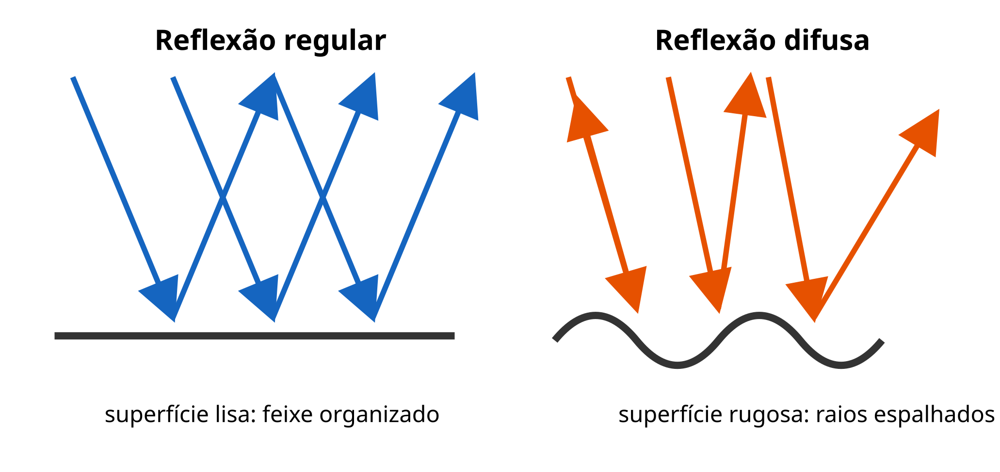
Não é correto associar reflexão regular apenas a “superfície brilhante” e difusa apenas a “superfície fosca”: a classificação depende também da escala das irregularidades em comparação com o comprimento de onda. Uma superfície pode ser lisa para uma radiação e rugosa para outra.
No cotidiano. A reflexão regular permite formar imagens em espelhos, superfícies metálicas polidas e água calma. A reflexão difusa permite enxergar paredes, roupas e páginas de um livro de diferentes posições, pois a luz refletida se espalha em várias direções. Pinturas foscas também ajudam a reduzir reflexos intensos em salas de aula e ambientes de trabalho.
Exemplo 1. Um raio faz \(35^\circ\) com a superfície de um espelho plano. Como a normal faz \(90^\circ\) com a superfície,
\[ \theta_i=90^\circ-35^\circ=55^\circ \quad\Rightarrow\quad \boxed{\theta_r=55^\circ}. \]
Espelhos planos
Para localizar a imagem de um ponto, traçamos dois raios refletidos e prolongamos suas trajetórias para trás do espelho. Os prolongamentos se cruzam na imagem. Como a luz não passa realmente por esse ponto, a imagem é virtual.
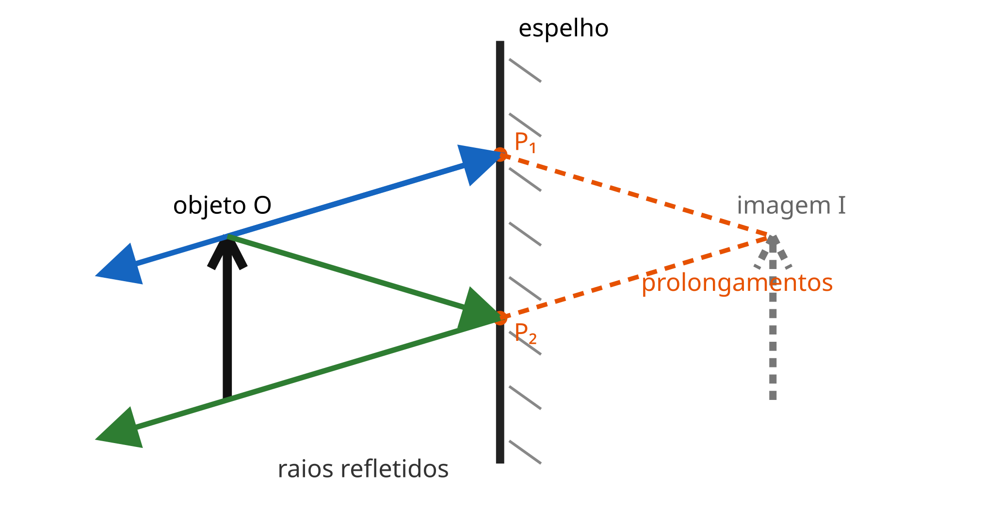
Em um espelho plano, a imagem é:
- virtual e direita;
- do mesmo tamanho que o objeto;
- simétrica em relação ao plano do espelho: \(d_i=d_o\);
- enantiomorfa: objeto e imagem têm quiralidade oposta.
O espelho não troca esquerda e direita de modo especial: ele inverte a direção perpendicular à sua superfície, isto é, frente e trás. A aparente troca lateral surge quando nos imaginamos girando para ocupar o lugar da imagem.
Aplicações práticas. Espelhos planos são usados em banheiros, provadores, salões de beleza e espelhos retrovisores internos porque preservam o tamanho aparente e não curvam as linhas da cena. Em elevadores e corredores, também aumentam a sensação de profundidade. Em instrumentos como periscópios, mudam a direção dos raios sem produzir ampliação.
Distâncias e velocidades
Se uma pessoa está a \(2{,}0\,\text{m}\) do espelho, sua imagem está \(2{,}0\,\text{m}\) atrás dele; a distância pessoa–imagem é \(4{,}0\,\text{m}\). Se a pessoa se aproxima do espelho com velocidade \(v\), a imagem também se aproxima do espelho com módulo \(v\). A distância entre ambas diminui com velocidade \(2v\).
Exemplo 2. Uma pessoa está a \(3{,}0\,\text{m}\) de um espelho e caminha em direção a ele a \(0{,}50\,\text{m/s}\). Após \(4{,}0\,\text{s}\), encontra-se a \(1{,}0\,\text{m}\) do espelho. A distância até a imagem passou de \(6{,}0\,\text{m}\) para \(2{,}0\,\text{m}\).
Se o espelho se desloca mantendo o objeto parado, seu plano mediador também muda. Um deslocamento \(\Delta x\) do espelho, perpendicularmente a si mesmo, desloca a imagem em \(2\Delta x\) em relação ao objeto. Se o espelho gira de um ângulo \(\beta\) enquanto o raio incidente mantém sua direção, a normal também gira \(\beta\) e o raio refletido gira \(2\beta\).
Associação de espelhos planos
Dois espelhos que formam um ângulo \(\alpha\) podem produzir múltiplas imagens por reflexões sucessivas. Cada imagem formada em um espelho pode funcionar como objeto para o outro.

Quando \(m=360^\circ/\alpha\) é inteiro:
\[ N=\begin{cases} m-1, & m\text{ par};\\ m-1, & m\text{ ímpar e objeto no bissetor};\\ m, & m\text{ ímpar e objeto fora do bissetor}. \end{cases} \]
Nos casos escolares mais usuais, com \(m\) inteiro e par ou com o objeto sobre o bissetor, usamos \(N=360^\circ/\alpha-1\). Se os espelhos forem paralelos, as reflexões sucessivas produzem uma sequência teoricamente infinita.
| Ângulo \(\alpha\) | \(360^\circ/\alpha\) | Número usual de imagens \(N\) |
|---|---|---|
| \(120^\circ\) | 3 | 2, se o objeto estiver no bissetor |
| \(90^\circ\) | 4 | 3 |
| \(60^\circ\) | 6 | 5 |
| \(45^\circ\) | 8 | 7 |
| \(30^\circ\) | 12 | 11 |
Exemplo 3. Para \(\alpha=60^\circ\), \(m=6\) é par e \(N=6-1=\boxed{5}\) imagens.
Campo visual
O campo visual depende do tamanho e da posição do espelho e da posição do observador. Um método seguro é refletir o olho do observador para trás do espelho e ligar essa imagem às extremidades do espelho. A região entre essas retas, à frente do espelho, é o campo visual.
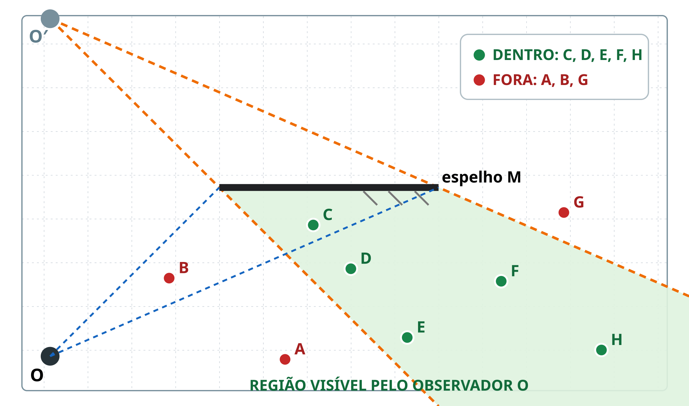
Reflexões sucessivas e aplicações
Em dois espelhos, a imagem produzida pelo primeiro pode funcionar como objeto para o segundo. A cada reflexão, a trajetória obedece localmente a \(\theta_i=\theta_r\). Esse princípio permite acompanhar feixes em corredores espelhados, caleidoscópios e periscópios.
Um periscópio simples usa dois espelhos planos paralelos, inclinados a \(45^\circ\). Cada reflexão desvia a luz em \(90^\circ\); depois das duas reflexões, o feixe volta a se propagar paralelamente à direção inicial. O instrumento muda a linha de visada, sem ampliar a imagem.
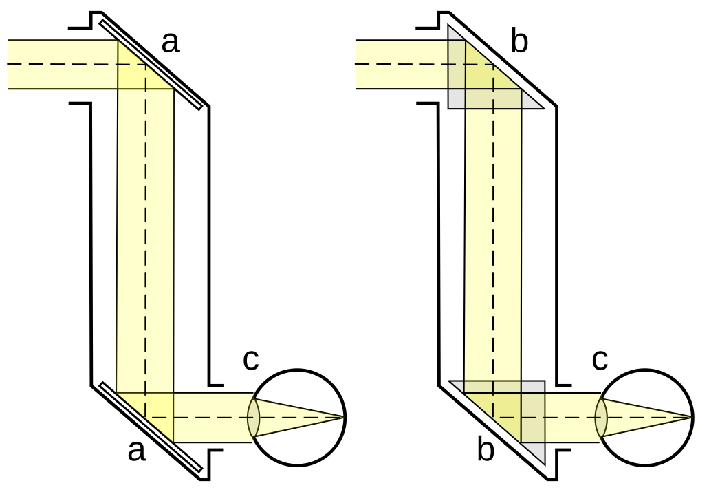
Espelhos esféricos
Um espelho esférico é uma calota de esfera refletora. No côncavo, a face refletora é interna; no convexo, é externa. Seus elementos principais são:
- vértice \(V\): centro da calota;
- centro de curvatura \(C\): centro da esfera;
- raio de curvatura \(R=VC\);
- foco principal \(F\): paraxialmente, ponto médio entre \(V\) e \(C\);
- distância focal \(f=VF=R/2\);
- eixo principal: reta que contém \(V\), \(F\) e \(C\).
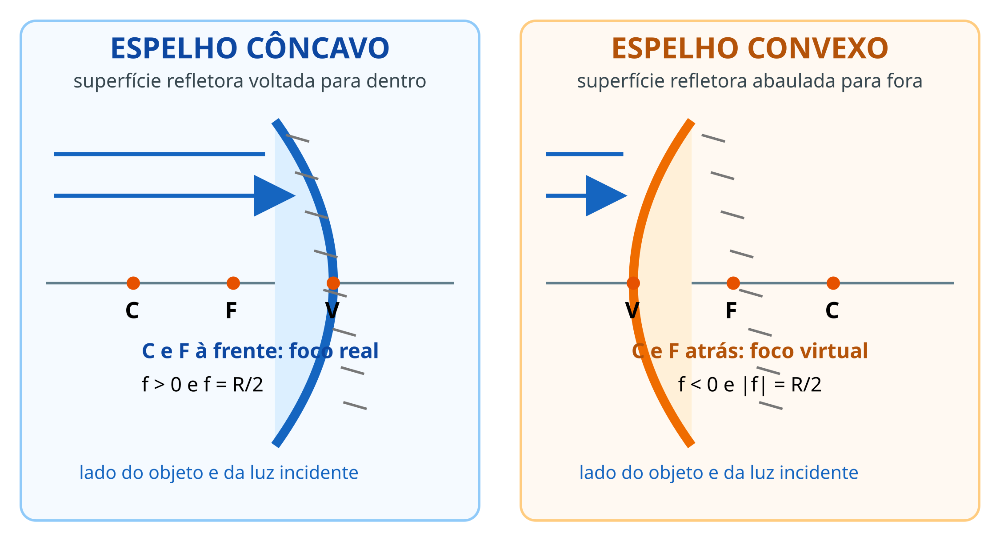
As relações desta aula são aproximações de Gauss: espelho com pequena abertura e raios próximos do eixo principal (paraxiais). Fora dessas condições aparece aberração esférica.
Raios notáveis
Para construir imagens, bastam dois dos seguintes raios:
- raio paralelo ao eixo reflete passando por \(F\) (ou seu prolongamento parece vir de \(F\), no convexo);
- raio que passa por \(F\) reflete paralelo ao eixo;
- raio dirigido a \(C\) retorna sobre si mesmo;
- raio que atinge \(V\) reflete simetricamente em relação ao eixo.

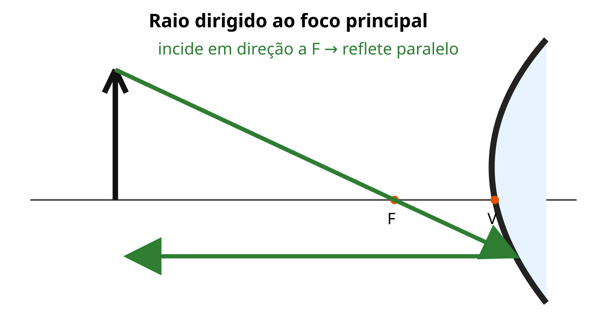
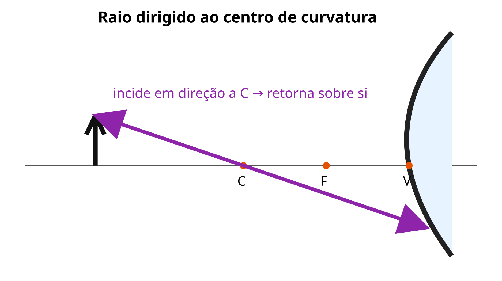
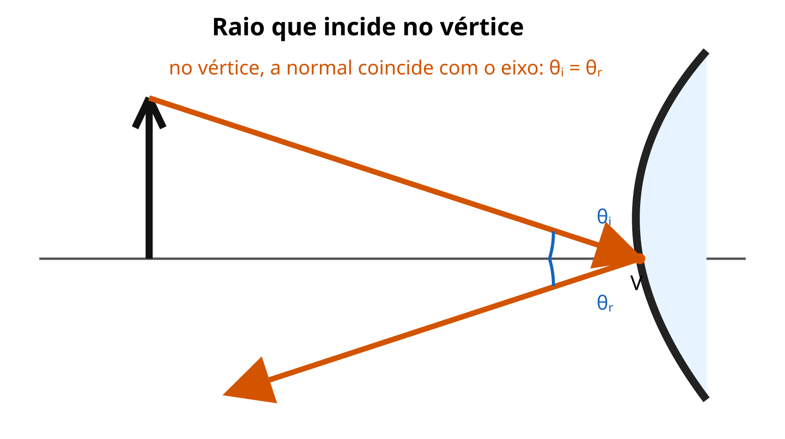
Formação de imagens
No espelho convexo, para qualquer objeto real, a imagem é sempre virtual, direita e menor, formada entre \(V\) e \(F\). Seu campo visual amplo explica o uso em retrovisores laterais e espelhos de segurança; a imagem reduzida faz os objetos parecerem mais distantes.
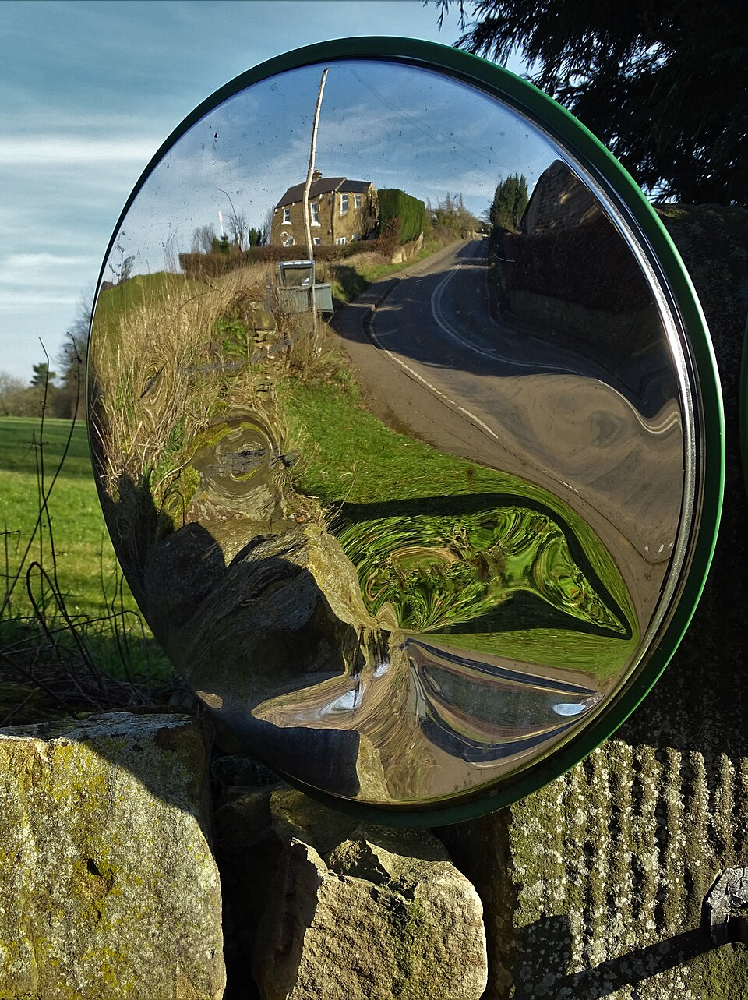
No espelho côncavo, o resultado depende da posição do objeto:
| Posição do objeto | Posição da imagem | Natureza e orientação | Tamanho |
|---|---|---|---|
| além de \(C\) | entre \(C\) e \(F\) | real, invertida | menor |
| em \(C\) | em \(C\) | real, invertida | igual |
| entre \(C\) e \(F\) | além de \(C\) | real, invertida | maior |
| em \(F\) | no infinito | imprópria | — |
| entre \(F\) e \(V\) | atrás do espelho | virtual, direita | maior |
Nas construções a seguir, partem da extremidade superior do objeto dois raios notáveis. A posição em que os dois raios refletidos se encontram determina a extremidade da imagem \(I\). Quando os raios refletidos divergem, prolongamos suas trajetórias para trás do espelho: o encontro dos prolongamentos determina uma imagem virtual.

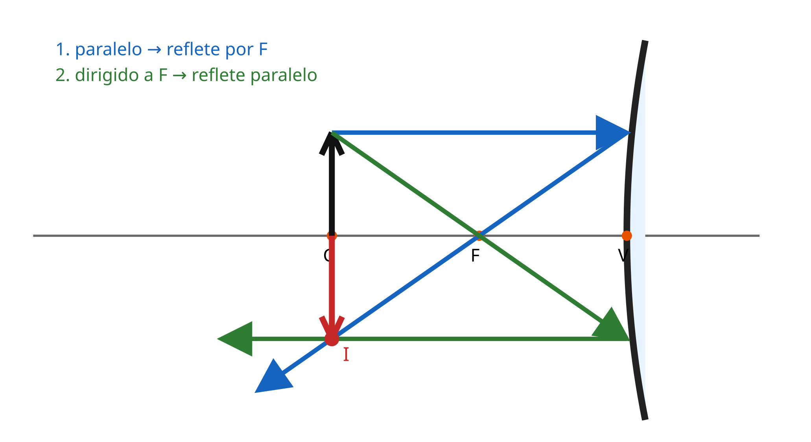

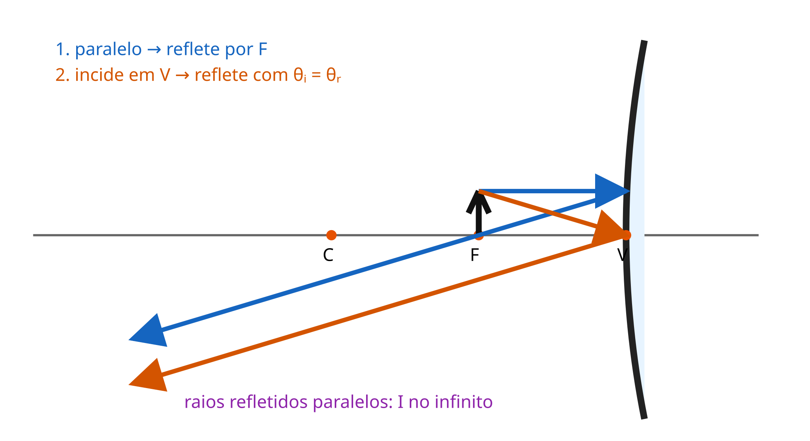

Imagem real é formada pelo encontro dos próprios raios e pode ser projetada em uma tela. Imagem virtual é formada pelo encontro dos prolongamentos e não pode ser projetada.
Aplicações práticas dos espelhos esféricos
- Espelhos convexos: aparecem em estacionamentos, saídas de garagem, corredores de lojas e retrovisores laterais. A imagem reduzida permite observar uma região maior, mas exige cuidado ao estimar distâncias.
- Espelhos côncavos com o objeto entre \(F\) e \(V\): produzem imagem virtual, direita e ampliada; por isso são usados em espelhos de maquiagem, de barbear e em alguns instrumentos de inspeção.
- Espelhos côncavos com a fonte próxima de \(F\): fazem a luz refletida sair aproximadamente paralela ao eixo, aplicação presente em faróis, lanternas e refletores.
- Espelhos côncavos recebendo luz quase paralela: concentram a energia perto do foco, princípio empregado em telescópios refletores e concentradores solares. Nunca se deve olhar diretamente para uma fonte intensa nem concentrar luz solar sem proteção e supervisão.
Retomando a situação-problema: o espelho convexo atende à entrada da garagem, o plano é adequado à bancada e o côncavo pode direcionar ou concentrar a iluminação da área de manutenção.
Equação de Gauss e aumento
Adotando a convenção de sinais de Gauss para espelhos:
\[ \boxed{\frac{1}{f}=\frac{1}{p}+\frac{1}{p'}} \qquad\text{e}\qquad \boxed{A=\frac{i}{o}=-\frac{p'}{p}}. \]
Para objeto real, \(p>0\). No espelho côncavo, \(f>0\); no convexo, \(f<0\). Imagem real tem \(p'>0\) e imagem virtual, \(p'<0\). Para o aumento, \(A>0\) indica imagem direita e \(A<0\), invertida; \(|A|\) compara os tamanhos.
Exemplo 4 — espelho côncavo. Um objeto está a \(30\,\text{cm}\) de um espelho côncavo com \(f=10\,\text{cm}\):
\[ \frac1{p'}=\frac1{10}-\frac1{30}=\frac1{15} \]
\[ p'=15\,\text{cm} \qquad\text{e}\qquad A=-\frac{15}{30}=-0{,}50. \]
A imagem é real, invertida e tem metade do tamanho do objeto.
Exemplo 5 — espelho convexo. Um objeto está a \(30\,\text{cm}\) de um espelho convexo com \(f=-20\,\text{cm}\):
\[ \frac1{p'}=-\frac1{20}-\frac1{30}=-\frac1{12} \]
\[ p'=-12\,\text{cm} \qquad\text{e}\qquad A=-\frac{-12}{30}=+0{,}40. \]
A imagem é virtual, direita e reduzida, a \(12\,\text{cm}\) atrás do espelho.
Verificação entre cálculo e diagrama
O desenho e a equação devem concordar. Antes de calcular, estime a região em que a imagem deve aparecer. Depois, verifique os sinais:
- \(p'>0\): imagem real, diante do espelho;
- \(p'<0\): imagem virtual, atrás do espelho;
- \(A<0\): imagem invertida;
- \(A>0\): imagem direita;
- \(|A|>1\), \(=1\) ou \(<1\): imagem maior, igual ou menor.
Essa conferência detecta erros de sinal. Por exemplo, um espelho convexo com objeto real não pode fornecer \(p'>0\) nem \(|A|>1\).
Síntese da aula
A normal é a referência para medir os ângulos da reflexão. O espelho plano produz uma imagem virtual e simétrica. Nos espelhos esféricos, a geometria dos raios notáveis antecipa a natureza da imagem; a equação de Gauss fornece sua posição e o aumento fornece orientação e tamanho.
Erros comuns
- Medir \(\theta_i\) a partir da superfície, em vez da normal.
- Dizer que reflexão difusa desobedece às leis da reflexão.
- Usar apenas \(d_i=d_o\) e esquecer que a distância objeto–imagem é \(2d_o\).
- Aplicar \(N=360^\circ/\alpha-1\) sem verificar suas condições.
- Confundir espelho convexo com lente convergente por causa do formato.
- Ignorar os sinais de \(f\), \(p'\) e \(A\) na equação de Gauss.
Exercícios de fixação
- 2.1)
- Um raio luminoso forma \(25^\circ\) com a superfície de um espelho plano. O menor ângulo entre o raio incidente e o raio refletido é:
- \(50^\circ\).
- \(25^\circ\).
- \(65^\circ\).
- \(130^\circ\).
- \(155^\circ\).
- 2.2)
- Uma pessoa está a \(1{,}8\,\text{m}\) de um espelho plano. A distância entre a pessoa e sua imagem é:
- \(0{,}9\,\text{m}\).
- \(3{,}6\,\text{m}\).
- \(1{,}8\,\text{m}\).
- \(2{,}7\,\text{m}\).
- \(7{,}2\,\text{m}\).
- 2.3)
- Para determinar geometricamente o campo visual de um observador diante de um espelho plano finito, deve-se:
- prolongar a normal somente até o observador.
- duplicar o comprimento do espelho em cada extremidade.
- refletir o observador para trás do espelho e ligar sua imagem às extremidades do espelho.
- ligar diretamente os objetos ao centro do espelho, sem usar a posição do observador.
- considerar visíveis apenas os objetos sobre a normal ao espelho.
- 2.4)
- Dois espelhos planos formam entre si um ângulo de \(45^\circ\). Considerando espelhos ideais e um objeto próximo ao vértice, o número de imagens formadas é:
- 6.
- 8.
- 9.
- 7.
- infinito.
- 2.5)
- Um objeto real é colocado além do centro de curvatura \(C\) de um espelho côncavo. A imagem formada é:
- virtual, direita e maior.
- real, direita e igual.
- virtual, invertida e menor.
- imprópria, localizada no infinito.
- real, invertida e menor.
- 2.6)
- O módulo do raio de curvatura de um espelho esférico é \(40\,\text{cm}\). O módulo de sua distância focal é:
- \(20\,\text{cm}\).
- \(10\,\text{cm}\).
- \(40\,\text{cm}\).
- \(80\,\text{cm}\).
- \(160\,\text{cm}\).
- 2.7)
- Um objeto está a \(60\,\text{cm}\) de um espelho côncavo de distância focal \(20\,\text{cm}\). A posição e as características da imagem são:
- \(p'=15\,\text{cm}\); virtual, direita e menor.
- \(p'=30\,\text{cm}\); real, invertida e menor.
- \(p'=20\,\text{cm}\); real, direita e igual.
- \(p'=40\,\text{cm}\); real, invertida e maior.
- \(p'=-30\,\text{cm}\); virtual, direita e maior.
- 2.8)
- Um espelho convexo tem \(f=-15\,\text{cm}\) e recebe um objeto real a \(30\,\text{cm}\). A posição da imagem e o aumento linear são:
- \(p'=+10\,\text{cm}\) e \(A=-1/3\).
- \(p'=+15\,\text{cm}\) e \(A=-1/2\).
- \(p'=-10\,\text{cm}\) e \(A=+1/3\).
- \(p'=-15\,\text{cm}\) e \(A=+1/2\).
- \(p'=-30\,\text{cm}\) e \(A=+1\).
- 2.9)
- Um objeto permanece parado enquanto um espelho plano é deslocado \(12\,\text{cm}\), perpendicularmente ao seu plano, afastando-se do objeto. Em relação ao objeto, a imagem desloca-se:
- \(6\,\text{cm}\).
- \(12\,\text{cm}\).
- \(18\,\text{cm}\).
- \(24\,\text{cm}\).
- \(36\,\text{cm}\).
- 2.10)
- Um objeto real está a \(10\,\text{cm}\) de um espelho côncavo cuja distância focal é \(20\,\text{cm}\). A imagem é:
- real, invertida e menor.
- real, invertida e maior.
- real, direita e igual.
- virtual, direita e menor.
- virtual, direita e maior.
Atividade — encontrando o foco de um espelho côncavo
Em ambiente seguro, aponte um espelho côncavo para uma cena distante e mova uma folha branca até obter uma imagem nítida. A distância folha–vértice aproxima \(f\), pois para \(p\gg f\) a equação de Gauss fornece \(p'\approx f\). Nunca direcione o espelho ao Sol nem observe luz intensa pelo espelho. Compare a medida com \(R/2\), se o raio for conhecido.
Materiais complementares


Referências
- HALLIDAY, David; RESNICK, Robert; WALKER, Jearl. Fundamentos de Física: óptica e física moderna. Rio de Janeiro: LTC.
- HEWITT, Paul G. Física Conceitual. Porto Alegre: Bookman.
- BONJORNO, José Roberto et al. Física: termologia, óptica e ondas. São Paulo: FTD.
- UNIVERSO NARRADO. Espelhos esféricos: o que são + raios notáveis. YouTube. Disponível em: https://www.youtube.com/watch?v=iQlFFa7qzC8. Acesso em: 11 out. 2026.
- Espelhos Planos — Formação de Imagens, Campo de Visão e Exercícios. YouTube. Disponível em: https://www.youtube.com/watch?v=mWIPF7yI6Ow. Acesso em: 10 out. 2026.
- 5 exercícios: espelhos esféricos — equação de Gauss, aumento, formação de imagens e raios notáveis. YouTube. Disponível em: https://www.youtube.com/watch?v=eWaoU0DuR4M. Acesso em: 10 out. 2026.
- Associação de espelhos planos — Física para concurso. YouTube. Disponível em: https://www.youtube.com/watch?v=dh7ebqwWHgg. Acesso em: 10 out. 2026.
- OLIVEIRA, Jefferson Rodrigues de. Diagramas de reflexão e espelhos. Elaboração própria, CC BY 4.0, 2026.
- SCHIRM, Christian. Periscope simple.svg. Wikimedia Commons, domínio público. Disponível em: https://commons.wikimedia.org/wiki/File:Periscope_simple.svg. Acesso em: 10 out. 2026.
- THEASBY, Neil. Convex traffic mirror by a bend at Ford. Wikimedia Commons, CC BY-SA 2.0. Disponível em: https://commons.wikimedia.org/wiki/File:Convex_traffic_mirror_by_a_bend_at_Ford_-_geograph.org.uk_-_6059314.jpg. Acesso em: 10 out. 2026.